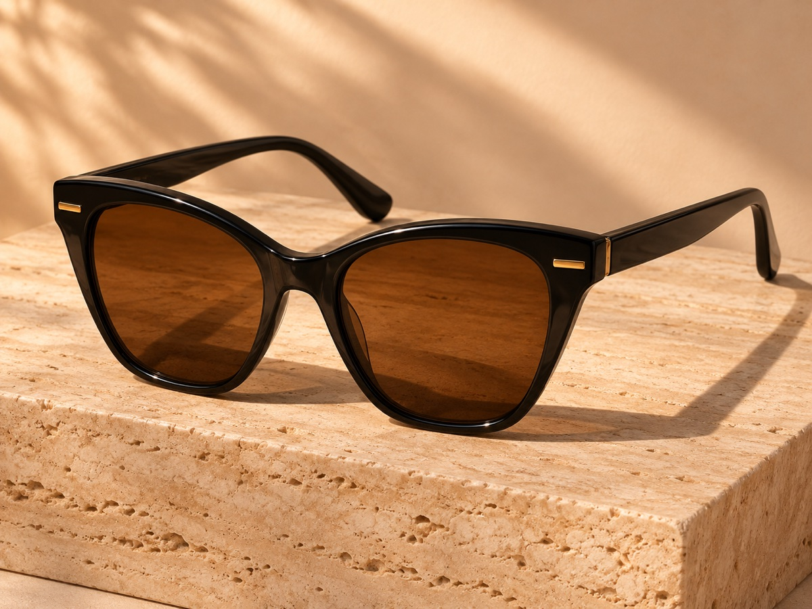
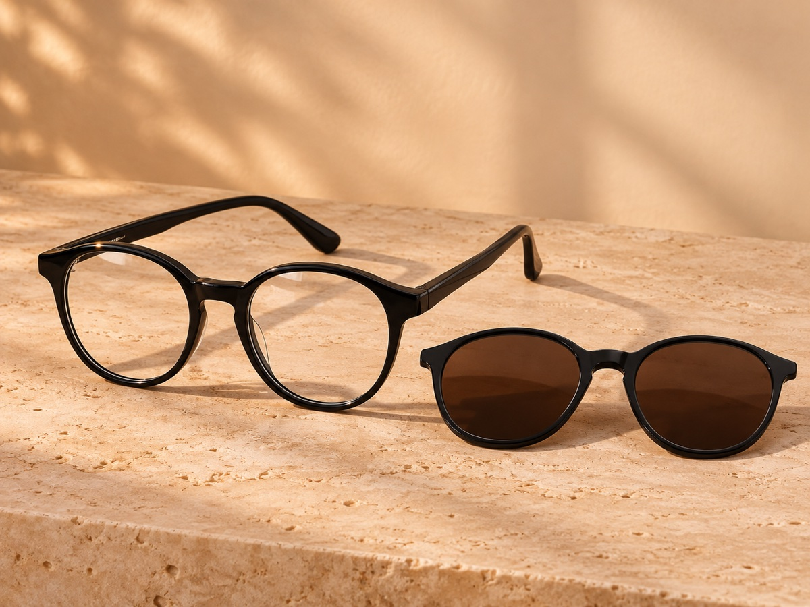

PARA TODOS OS DIAS
Óculos de grau
Armações que fazem parte do seu estilo, de perto e de longe.
Encontre seu modeloSEU OLHAR MERECE ESSE CUIDADO
Seu estilo começa no olhar. Encontre os óculos que combinam com você e com todos os seus momentos.
Seu próximo favorito está aqui.
Em Buriti Alegre, pertinho de você.
ENCONTRE SEU PRÓXIMO FAVORITO
Do clássico ao marcante, um par para acompanhar a sua rotina e expressar quem você é.
Armações que fazem parte do seu estilo, de perto e de longe.
Encontre seu modelo
O detalhe que completa o visual e acompanha os seus momentos.
Descubra seu favorito
Grau e solar em uma combinação prática para a sua rotina.
Conheça as opçõesImagens ilustrativas. Consulte os modelos disponíveis na loja.
O JEITO ÓTICA VISÃO
Tem quem ame o clássico. Tem quem prefira ousar. A gente acredita que a melhor escolha é aquela que faz você se sentir bem.
Vamos encontrar o seu?Conte para a gente o que você procura. Grau, sol ou clip-on, a sua escolha começa por aqui.
Conheça as opções de armações e consulte a disponibilidade dos seus modelos favoritos.
Venha até a loja para experimentar e descobrir o par que combina com você.
ESPERAMOS POR VOCÊ
Venha conhecer as armações de perto.
A Ótica Visão está em Buriti Alegre, Goiás.
3444-2853
@oticavisaobaANTES DE VIR
Uma conversa pode ajudar a encontrar o seu próximo par.
Fale com a lojaVocê encontra opções de óculos de grau, óculos de sol e modelos clip-on. Fale com a gente pelo Instagram para consultar as armações disponíveis.
Acesse nosso Instagram, @oticavisaoba, e envie uma mensagem com o estilo que você procura. Por lá, você pode consultar os modelos, os valores e a disponibilidade.
São armações de grau com um acessório de lentes solares que se encaixa na frente. Assim, você pode alternar entre as duas opções na mesma armação.
Estamos na Avenida José Messias Ferreira, 1939, Sala 02, em Buriti Alegre, Goiás. Use o botão “Como chegar” para abrir a rota e confirme o horário de atendimento com a loja antes da visita.
O PRÓXIMO PASSO É SEU
Vamos encontrar os óculos
que têm tudo a ver com você?